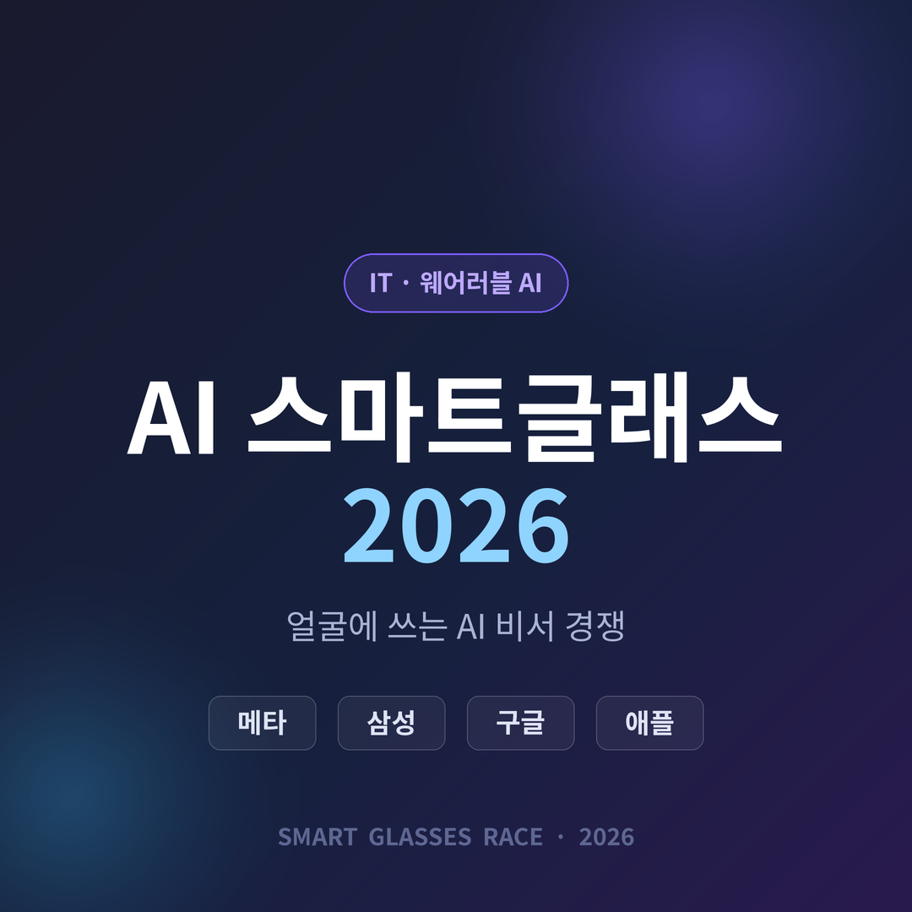
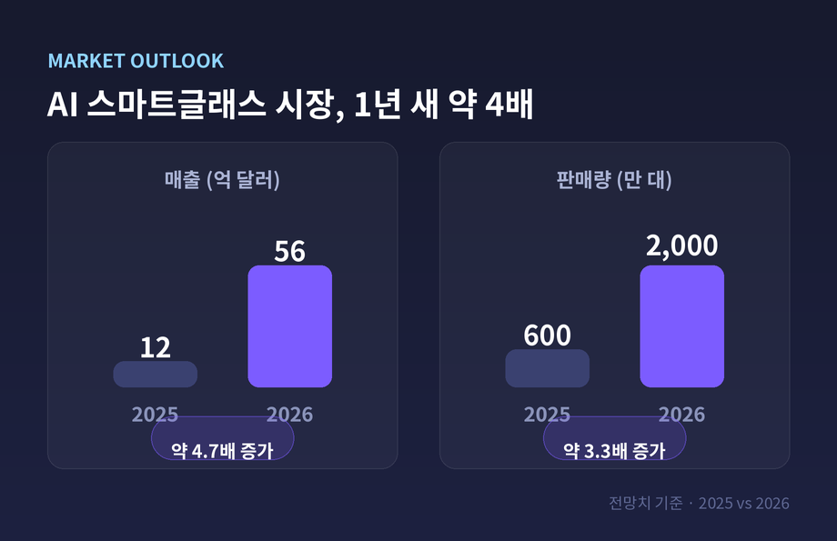
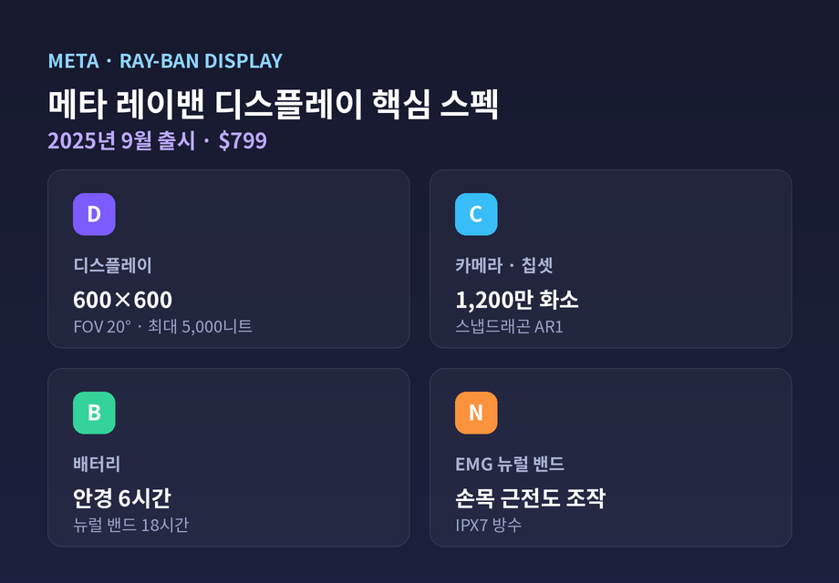
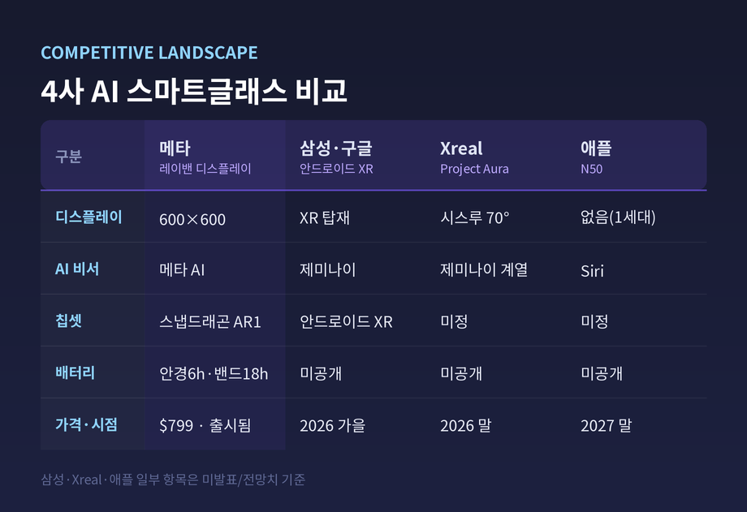

이번 글에서는 2026년 AI 스마트글래스 경쟁 구도를 정리해 보겠습니다.
한 줄로 먼저 요약하면 이렇습니다.
자세한 내용을 하나씩 살펴보겠습니다.
올해는 'AI 비서를 얼굴에 쓰는' 시대의 원년으로 불립니다.
근거는 숫자입니다.
AI 스마트글래스 매출은 2025년 약 12억 달러에서 2026년 56억 달러로 약 4배 성장이 전망됩니다.
판매량도 600만 대에서 2,000만 대로 늘어날 것으로 예측됩니다.
동력은 단순합니다.
카메라·마이크·스피커에 멀티모달 AI 비서를 결합해, "보는 것을 이해하고 답하는" 핸즈프리 경험이 현실이 된 것입니다.

지금 시장의 주인은 메타입니다.
에실로룩소티카는 지난해 스마트글래스를 700만 대 넘게 팔았습니다.
한 해 동안 판매량이 약 3배로 뛴 수치입니다.
글로벌 점유율은 출처에 따라 76.1%에서 82% 사이로 집계됩니다.
핵심은 2025년 9월 출시된 레이밴 디스플레이($799)입니다.
렌즈에 600×600 해상도 디스플레이를 심었습니다.
시야각은 20도, 밝기는 최대 5,000니트로 실내외 모두 선명합니다.
스냅드래곤 AR1 칩에 1,200만 화소 카메라를 얹었고, 안경 자체로 최대 6시간 쓸 수 있습니다.
차별점은 함께 오는 뉴럴 밴드입니다.
손목 근육의 미세한 전기 신호를 읽어, 작은 손동작만으로 안경을 조작합니다.
밴드는 최대 18시간 가고, IPX7 방수를 지원합니다.
다만 완성형은 아닙니다.
한 리뷰는 손목밴드를 "흠잡을 데 없다"고 평했지만, 안경 자체는 "결함이 있다"고 했습니다.
완전한 AR 프로토타입인 오라이언은 아직 소비자용 출시일조차 미정입니다.

추격은 연합으로 옵니다.
삼성과 구글은 첫 안드로이드 XR 글래스를 공개했습니다.
첫 스타일군은 2026년 가을 출시 예정이며, Google I/O 2026에서 프리뷰됩니다.
삼성의 '갤럭시 글래스'도 함께 등장할 전망입니다.
무기는 제미나이 AI입니다.
멀티모달 제미나이가 사용자가 보고 하는 것을 맥락으로 이해해, 앱 전반에서 작업을 돕습니다.
안드로이드 기반이라 구글 플레이 앱이 그대로 돌아갑니다.
실시간 번역, 시야 속 메뉴판·표지판 번역도 예고됐습니다.
디자인은 안경 브랜드와 손잡았습니다.
젠틀몬스터, 워비파커와 협업해 '쓰고 다니고 싶은 안경'을 노립니다.
같은 진영에 또 하나의 축이 있습니다.
구글과 Xreal이 협력한 'Project Aura'입니다.
2026년 말 글로벌 출시 예정이며, 시야각 70도의 광학 시스루 설계로 몰입형을 겨냥합니다.
참고: 삼성 갤럭시 글래스의 세부 스펙(무게 약 50g, 스냅드래곤 AR1, 1,200만 화소 소니 센서 등)은 아직 유출 정보입니다. 정식 발표 때 바뀔 수 있습니다.
예상과 달리, 애플은 한발 물러섰습니다.
첫 AI 스마트글래스(코드명 N50)는 2027년 말 출시로 연기됐습니다.
이유는 분명합니다.
안경을 쓸모 있게 만드는 시각 AI가 충분히 똑똑한 Siri를 전제로 하는데, 그 역량이 아직 갖춰지지 않았다는 것입니다.
1세대는 카메라·오디오·Siri를 갖되, 렌즈 내장 AR 디스플레이는 없을 전망입니다.
"저 식당 이름은?" 같은 맥락 정보를 Siri가 답하는 방식입니다.
목표 가격대는 $200~$500으로, 메타와 정면 경쟁합니다.
예전엔 애플이 늦어도 판을 뒤집곤 했습니다.
지금은 진입조차 Siri에 묶여 있습니다.

기술 경쟁보다 무거운 문제가 따라옵니다.
연구자들은 메타 스마트글래스를 얼굴 인식 도구·공개 DB와 결합하면, 수초 안에 낯선 사람을 식별할 수 있음을 시연했습니다.
메타의 얼굴 인식 기능(내부 코드명 'Name Tag')을 두고 우려가 커진 이유입니다.
미국 상원의원들은 실시간 얼굴 식별이 스토킹·괴롭힘에 노출시킬 수 있다고 경고했습니다.
2026년 3월에는 "감시하지 않겠다"던 메타가 실제로는 사람이 영상을 본다는 취지의 소송도 제기됐다는 보도가 나왔습니다.
메타의 입장은 다릅니다.
1세대에서 얼굴 인식을 의도적으로 뺐고, 녹화 시 LED 표시 같은 안전장치를 둔다고 밝혀왔습니다.
다만 비판 측은 표시등이 작고 우회할 수 있다고 지적합니다.
편리함과 사생활은 같은 렌즈에 담겨 있습니다.
어느 쪽으로 기우느냐가, 이 시장의 진짜 시험대일지 모릅니다.
정리하면 이렇습니다.
2026년은 AI 비서가 손에서 얼굴로 올라온 해입니다.
메타가 앞서고, 삼성·구글이 따라붙고, 애플은 잠시 멈춰 섰습니다.
결국 남는 질문은 성능표가 아닙니다.
— "이 안경을 쓴 사람 앞에서, 나는 안전한가."
답이 정리되기 전까지, 이 경쟁은 아직 절반만 끝난 셈입니다.